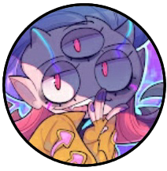
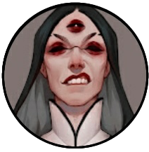
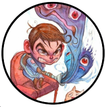
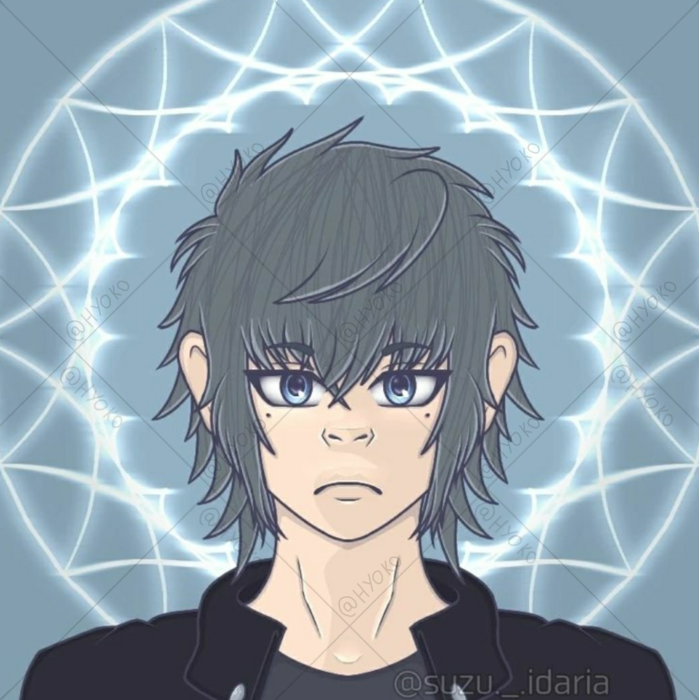
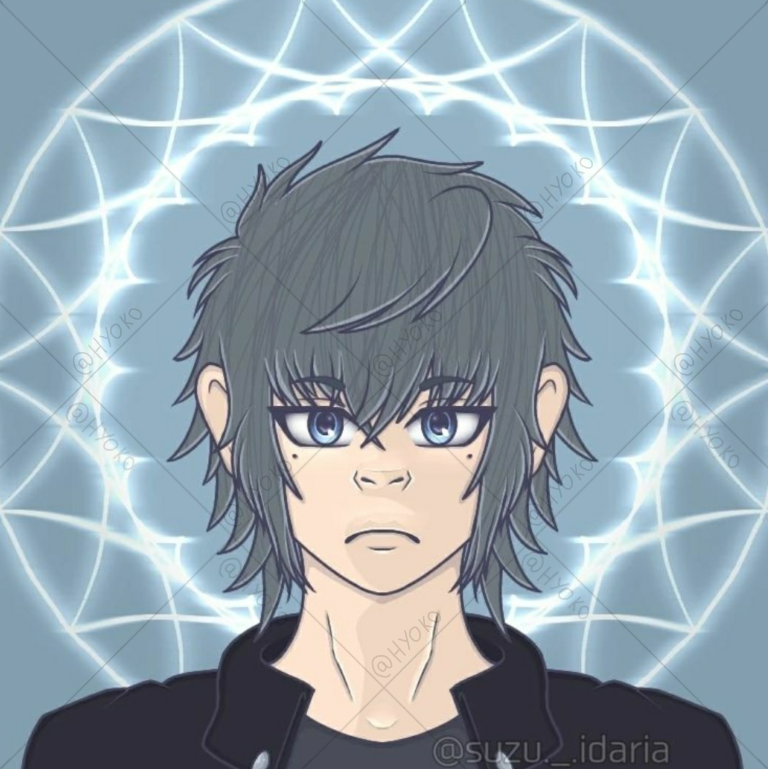
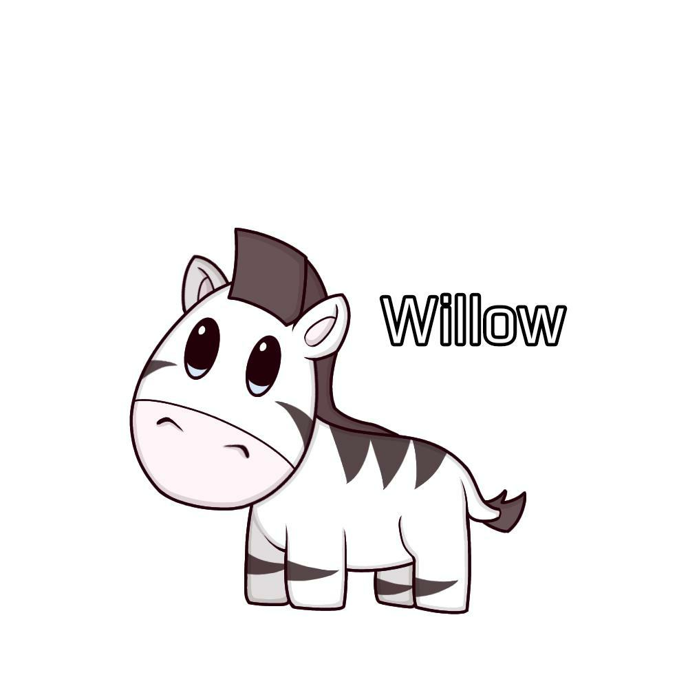
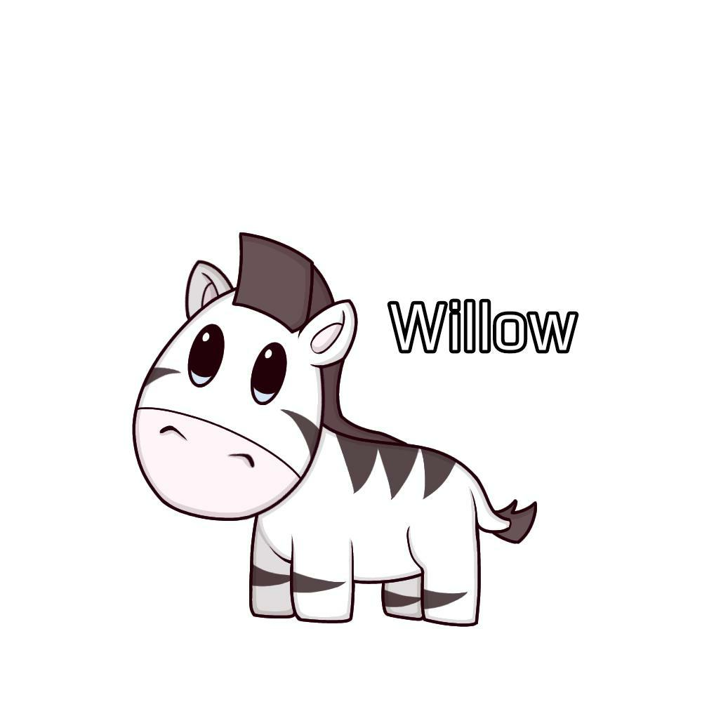
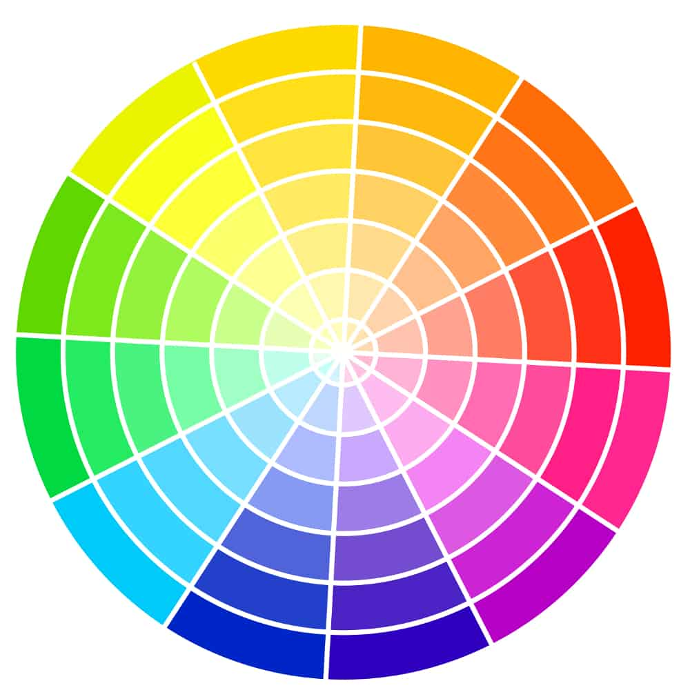

Wiki
Architecture

Sculpture

Peinture

Musique

Poésie

Théatre

Cinéma

Photographie

Bande-dessinée
L'art regroupe les œuvres humaines destinées à toucher les sens et les émotions du public. Il peut s'agir aussi bien de peinture que de sculpture, vidéo, photo, dessin, littérature, musique, danse…
L’art est une activité, le produit de cette activité ou l'idée que l'on s'en fait, qui s'adresse délibérément aux sens, aux émotions, aux intuitions et à l'intellect.
Wiki Architecture |
Sculpture |
Peinture |
Musique |
Poésie |
Théatre |
Cinéma |
Photographie |
Bande-dessinée |
|---|
Comme inspirations artistique, j'ai plusieurs artiste qui me motive à continuer et a essayer de m'améliorer. Ce sont des artistes qui font de l'animation et des oeuvres statiques.
Je suis beaucoup inspirée par le cotés fantaisie, mythologie et science-fiction. Ce sont de grands thémes que j'adore, aucune limite à la créativitée et à l'imaginations.
 Neytirix Animation et Art |
Speedory Animation et Art |
 Sir Fluff Animation et Art |
 Camila Cuevas Animation et Art |
 Cas Van De Pol Animation et Art |
 Shizufin Animation et Art |
 Emilyena Art |
 Melly Vuong Animation et Art |
 Johndrawing Art |
|---|
Mes oeuvres digital /réalisées sur tablette, téléphone et pc :
Mes personnages :
 
  

Mes oeuvres traditionnelle /réalisées sur papier :
Pour créer mes oeuvres je commence généralement par noter les grandes idées sur un papier, en donant des mots cela va permettre de pouvoir imaginer le dessin en globaliter.
Exemple de texte :

Ensuite je fait mon premier "sketch", mon brouillon pour voir à quoi le dessin va ressembler. Je fait naturellement beacoup de details.
Exemple de skecth :

Pour continuer je fait mon "lineart", étant les traits du dessin c'est une étape assez complexe à aimer, car on passe de notre magnifique brouillon
avec beaucoup de détails et même des couleurs des fois, à un dessin avec des lignes lisse seulement.
Exemple de lineart :

Le "coloring", le fait de colorié son dessin est une de mes étapes préférer. Il faut savoir quelle couleur mettre, savoir mélanger les températures chaudes ou froides.
Il faut connaître sa roue des couleurs (pas obligatoire mais pratique), il faut aussi connaître la théorie des couleurs que peut de monde connaît.
Exemple de coloring :


Pour finir, je fais les "rendering", l'action de faire des effets de lumiére, d'ombre ou même des effets de 3d (personnelement je ne fait pas d'effet 3d).
C'est une étape assez compliqué, car il faut comprendre où est citué le personnage ou l'objet dans l'espace. Il faut savoir d'où vient la lumiére et pourquoi.
Exemple de rendering :

Tous droits réservés © 2024 - Julie